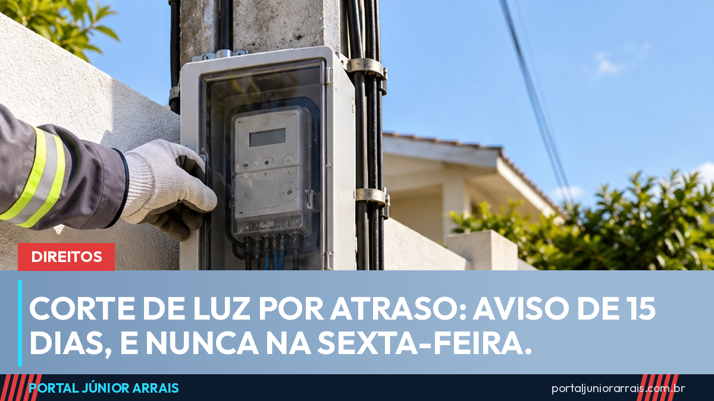

Corte de luz e de água por falta de pagamento: aviso, dias proibidos e prazo de religação

A distribuidora de energia pode cortar a luz de quem está com a conta atrasada, mas só depois de aviso por escrito com pelo menos 15 dias de antecedência. O corte não pode começar na sexta-feira, no sábado, no domingo, em feriado ou na véspera de feriado, como determina a Lei 8.987/1995. Para a água, a lei do saneamento exige aviso de no mínimo 30 dias. E conta muito antiga, em regra, não autoriza o corte.
O que diz a lei
A Lei de Concessões (Lei 8.987/1995, art. 6º, § 3º, II) diz que não há falha do serviço quando a interrupção acontece por falta de pagamento, desde que haja aviso prévio. Em 2020, a Lei 14.015 incluiu o § 4º nesse artigo, que proíbe iniciar o corte por inadimplência na sexta, no sábado, no domingo, em feriado ou no dia anterior a feriado.
Para a energia, as regras detalhadas estão na Resolução Normativa 1.000/2021 da Agência Nacional de Energia Elétrica (ANEEL). Pelo contrato padrão que as distribuidoras seguem:
- o aviso deve ser escrito e específico, com entrega comprovada, ou vir impresso em destaque na fatura, com 15 dias de antecedência;
- o corte só pode ser feito em dias úteis, das 8h às 18h;
- se o consumidor mostrar o comprovante de pagamento à equipe, a luz não pode ser cortada;
- a distribuidora não pode cortar depois de 90 dias do vencimento da fatura não paga, salvo motivo justificado, como uma ordem judicial.
Para a água, a Lei 11.445/2007 (art. 40) permite a interrupção por falta de pagamento depois de notificação formal, com aviso de pelo menos 30 dias. No caso de família de baixa renda com tarifa social, o corte deve seguir prazos e critérios que preservem condições mínimas de saúde.
Conta antiga e fraude no medidor
Na mesma linha da regra dos 90 dias, o Superior Tribunal de Justiça (STJ) costuma decidir que o corte serve para cobrar a conta atual, e não dívidas antigas, que precisam ser cobradas pelos meios comuns, como uma ação de cobrança.
A exceção é a fraude no medidor. No Tema 699 dos recursos repetitivos (REsp 1.412.433/RS, Primeira Seção, julgado em 2018), o STJ fixou que, se a fraude atribuída ao consumidor for apurada com direito de defesa, a distribuidora pode cortar a energia, com aviso prévio, pela falta de pagamento do consumo recuperado dos 90 dias anteriores à constatação da fraude. O corte precisa ser feito em até 90 dias após o vencimento desse débito. O que for mais antigo só pode ser cobrado na Justiça.
Religação e quem depende de aparelho
Depois de pagar ou negociar a dívida, a distribuidora tem prazo para religar:
- até 24 horas na área urbana e 48 horas na área rural, na religação normal;
- até 4 horas na área urbana e 8 horas na rural, na religação de urgência, que costuma ter taxa maior;
- até 4 horas, sem custo, quando o corte foi indevido, com compensação ao consumidor.
Quem tem em casa uma pessoa que depende de aparelho elétrico para viver, como respirador ou concentrador de oxigênio, deve pedir o cadastro dessa condição na distribuidora. Com ele, a empresa tem de avisar por escrito e de forma individual, com 5 dias úteis de antecedência, os desligamentos programados. A norma da ANEEL não traz uma proibição geral de corte por dívida nesses casos, por isso a família deve agir rápido diante de qualquer aviso.
Unidades residenciais de baixa renda podem pedir o parcelamento da dívida, e a distribuidora deve aceitar quando o débito ainda não tiver sido parcelado antes. Vale conferir também se a família tem direito à Tarifa Social e aos outros descontos na conta de luz.
Onde reclamar
Se o corte desrespeitou as regras, registre reclamação na ouvidoria da distribuidora e anote o protocolo. Sem solução, recorra à ANEEL pelos canais oficiais da agência, ao Procon ou ao consumidor.gov.br. No caso da água, a reclamação vai para a companhia de saneamento e, depois, para a agência reguladora estadual ou municipal. Em situação urgente, como a de quem depende de aparelho, a Defensoria Pública pode levar o caso à Justiça.
Cuidado com golpe
Golpistas se passam por funcionários da companhia de luz ou de água, ligam ou mandam mensagem dizendo que o corte vai acontecer em poucas horas e oferecem um boleto ou uma chave Pix para "evitar o desligamento". Há também quem apareça na porta pedindo dinheiro vivo para religar na hora.
O aviso de corte verdadeiro chega por escrito e com antecedência, e o pagamento deve ser feito pela própria fatura ou pelos canais oficiais da empresa. Na dúvida, ligue para o número impresso na conta e procure um profissional de sua confiança.
Conteúdo informativo — não substitui orientação individualizada sobre o seu caso.
Júnior Arrais · Editor do Portal Júnior Arrais
Comunicador de Ubá (MG). Escreve todos os dias sobre benefícios sociais, INSS, trabalho e economia do dia a dia, a partir do Diário Oficial, de portarias e de fontes oficiais, em linguagem simples. Conheça a linha editorial e a política de correções do portal.